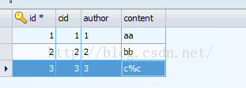

版权声明：本文为博主原创文章，未经博主允许不得转载。 https://blog.csdn.net/i_chenjiahui/article/details/48378017
python往数据库插入数据，
基础做法是：
cur=db.cursor()
sql = "INSERT INTO test2(cid, author, content) VALUES (1, '1', 'aa')"
cur.execute(sql,())
也可以这样：
cur=db.cursor()
sql = "INSERT INTO test2(cid, author, content) VALUES (%s, '%s', '%s')"
sql=sql%('2','2','bb')
cur.execute(sql,())
但是当含有特殊一点的字符时就有问题了，比如单引号，%等，甚至会被sql注入。
和其他语言一样，python也他的方法来解决sql注入。
cur=db.cursor()
sql = "INSERT INTO test2(cid, author, content) VALUES (%s, %s, %s)"
cur.execute(sql,('3','3','c%c'))
注意，后面2个%s的前后单引号去掉了。
结果如下：
